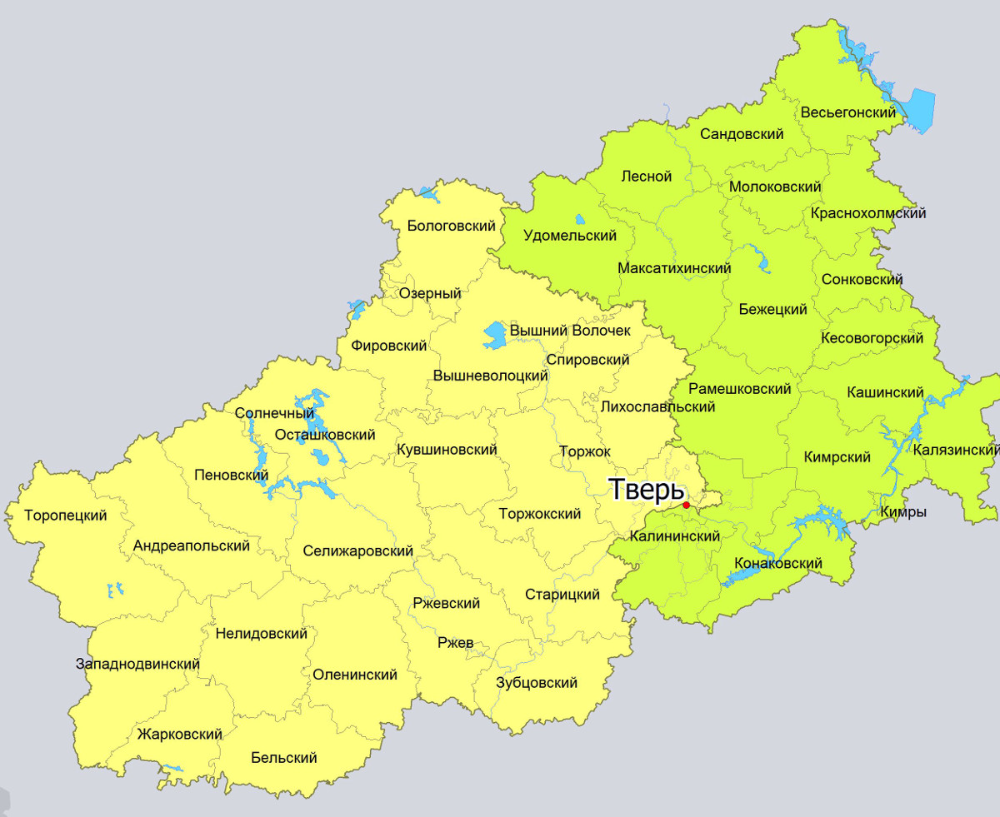

Тверь
|
 |
Общие сведения и история Твери
Тверь входит в список самых крупных городов России и считается ее научно-культурным
центром. По мнению профессора Кучина В.А., история города началась в 1130 году, именно
тогда была сооружена первая крепость в Твери.
Однако подобные исторические изыскания идут врознь с некоторыми данными и не
подтверждают наличие укреплений некоторых поселений на мысу в месте впадения Тьмаки в
Волгу. В противоположность этой теории Колосов В.И. и Борзаковский В.С. выдвинули свою.
Они считали, что город Тверь был основан новгородцами в левом берегу Волги и устье Тверцы
и изначально он был небольшим торговым пунктом, который в конечном итоге развился до
густонаселенного города. Уже в конце 12 века поселение было укреплено суздальскими
князьями, которые в 13 веке сделали из него суздальскую крепость, располагавшуюся на
новгородско-суздальской границе, и было перенесено на правый берег.
Первое упоминание о Твери появилось в 1135 году в уставной грамоте князя Новгорода —
Всеволода Мстиславича. Дата основания города Твери до сих пор остается спорным вопросом,
тем не менее на сегодняшний день официально была подтверждена только одна дата – 1153
год.
Город Тверь может похвастаться удобным географическим положением. Он находится между
такими крупными городами, как Петербург и Москва, соединяет их железная дорога и
автомобильное шоссе. Чтобы доехать от Твери до столицы, нужно менее трех часов (без
остановок). Официально Тверь располагается к северу от Тверской гряды, а вернее на
западной окраине Верхневолжской низины. Город считается первым морским портом, который
был построен на великой русской реке под названием Волга. Река считается одной из самых
больших рек во всей Европе и гордо украшает собой центр города Твери.
|